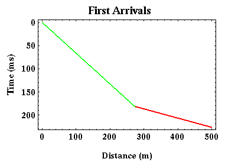
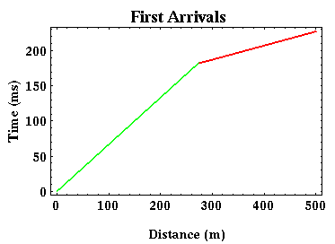

First Arrivals
We will now concentrate on the times of arrival of the first wave to be recorded at each offset. When performing an exploration refraction experiment, this is the only information extracted from the recorded seismograms that is used. Plotting the arrival times of the first arrival versus offset produces the travel-time curve shown below.

Before proceeding, let me make a comment about the typical plotting conventions used to display seismic observations. As has been done in all of the travel-time plots shown to this point, time is increasing downward. This convention is commonly used when discussing reflection methods. For refraction observations such as those that we will discuss, it is more common to plot time increasing upward. Thus, we can re-plot the travel-time curve shown above in the following way:

Both of the plots shown here illustrate the same travel-time versus offset features, but they're just presented in two different ways. For the remainder of this set of notes, we will follow the usual refraction convention and plot time increasing upward.
 For our simple layer over a halfspace model, notice
that the travel-time curve
associated with the first arrivals is given by two, straight-line segments.
At small offsets (green), the travel-time curve corresponds to the direct arrival.
At larger offsets (red), the travel-time curve corresponds to that of the refracted arrival.
The two segments are clearly distinguished from each other by a change in slope at some critical offset
commonly
called the cross-over distance.
This distance represents the offset beyond which the direct arrival is no longer the first arrival recorded.
For our simple layer over a halfspace model, notice
that the travel-time curve
associated with the first arrivals is given by two, straight-line segments.
At small offsets (green), the travel-time curve corresponds to the direct arrival.
At larger offsets (red), the travel-time curve corresponds to that of the refracted arrival.
The two segments are clearly distinguished from each other by a change in slope at some critical offset
commonly
called the cross-over distance.
This distance represents the offset beyond which the direct arrival is no longer the first arrival recorded.
In going from the recorded seismograms to our first arrival travel-time curves, we must determine the time instant at which ground motion was initiated on each seismogram. On the seismogram shown to the right, this time corresponds to the time indicated by the red line. On this record, choosing the first arrival time is not difficult, because the seismogram shows no signal before this time. If, however, there is any type of noise recorded on the seismogram preceeding the time of arrival of the first arrival, this time can be very difficult to pick. In practice, one should consider this choice of first arrival times to be part of the interpretational process rather than part of the data collecting process. Often, geophysicists will not attempt to pick the first arrival time but will rather pick the time of the first prominent peak following the first arrival as shown by the blue line. This will bias your results by a small amount, but the effect of the bias is minimal compared to the effect of picking first arrival times inconsistently from trace to trace.
Seismology
- Simple Earth Model: Low-Velocity Layer Over a Halfspacepg 11
- Head Wavespg 12
- Records of Ground Motionpg 13
- Travel-time Curves for a Simple Earth Modelpg 14
- First Arrivalspg 15
- Determining Earth Structure from Travel Timespg 16
- Derivation of Travel Time Equationspg 17
- High-Velocity Layer Over a Halfspace: Reprisepg 18
- Picking Times of Arrivalspg 25
- Wave Propagation with Multiple Horizontal Layerspg 26
- Travel Time Curves from Multiple Horizontalpg 27
- Hidden Layerspg 28
- Head Waves from a Dipping Layer: Shooting Down Dippg 29
- Head Waves from a Dipping Layer: Shooting Up Dippg 30
- A Field Procedure for Recognizing Dipping Bedspg 31
- Estimating Dips and Depths from Travelpg 32